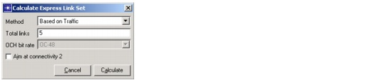

Optical Express Layer > Select Express Links Dialog Box > Calculate Express Link Set Dialog Box
Calculate Express Link Set Dialog Box
This dialog box appears when you click Suggest Links in the Select Express Links Dialog Box. You can use this dialog box to calculate a suggested set of express links. SP Guru Transport Planner selects express links based on traffic or cost using the specified options, with no topological constraints.
Figure 11-4 Calculate Express Link Set Dialog Box

- Based on Traffic—This method is based on the expected amount of traffic (in Gbps) over each express link when shortest-path routing of all traffic is applied. SP Guru Transport Planner selects the links that exchange the most traffic between nodes .
- Based on Cost (quick)—Use the "Based on Cost" algorithm without recalculating the shortest paths (see Based on Cost Algorithm)
- Based on Cost (precise)—Use the "Based on Cost" algorithm while recalculating the shortest paths (see Based on Cost Algorithm)
Based on Cost Algorithm
If you select the "Based on Cost" algorithm, SP Guru Transport Planner selects express links using an iterative algorithm. This algorithm adds the express links that are expected to result in the highest cost savings.
In each iteration, the algorithm compares—for each node pair—the relative cost savings of fiber routing over an express link versus wavelength routing over the existing topology with no express links. The algorithm considers the OCH bit rate used to groom the DCL traffic to the appropriate number of wavelengths. (The OCH bit rate is specified in the Calculate Express Link Set dialog box, shown in see Figure 11-4-Calculate Express Link Set Dialog Box ).
The algorithm has the following workflow:
- In iteration 1, SP Guru Transport Planner selects the node pair with the highest cost savings as the first express link.
- In subsequent iterations, SP Guru Transport Planner considers the express links of previous iterations and recalculates the cost savings for each node pair. In each iteration, the algorithm selects the new express link with the highest cost savings. You can specify whether the algorithm recalculates the shortest path when it recalculates the cost savings (see Figure 11-4-Calculate Express Link Set Dialog Box ):
- If the algorithm recalculates the shortest path, it recomputes all shortest paths while considering express links.
- If the algorithm does not recalculate the shortest path, SP Guru Transport Planner reroutes connections between the end nodes of express links only. This option requires less calculation time but the results are less precise.
| Home © 1987-2007 OPNET Technologies, Inc. All Rights Reserved. This software may be covered by one or more U.S. Patents. See complete patent notice in the Legal Notices section. OPNET Support Center |